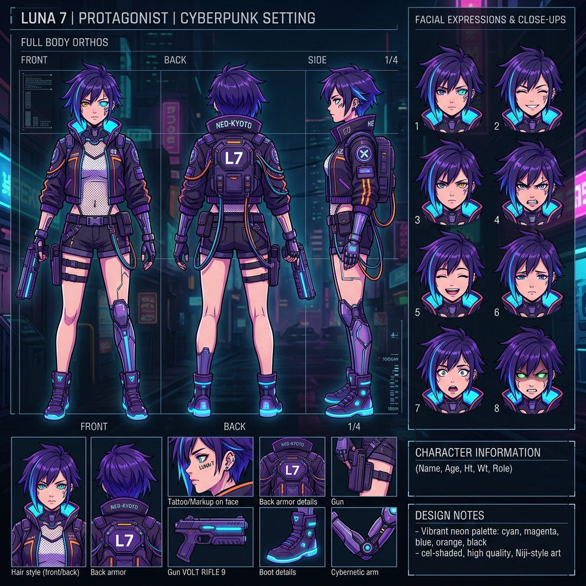
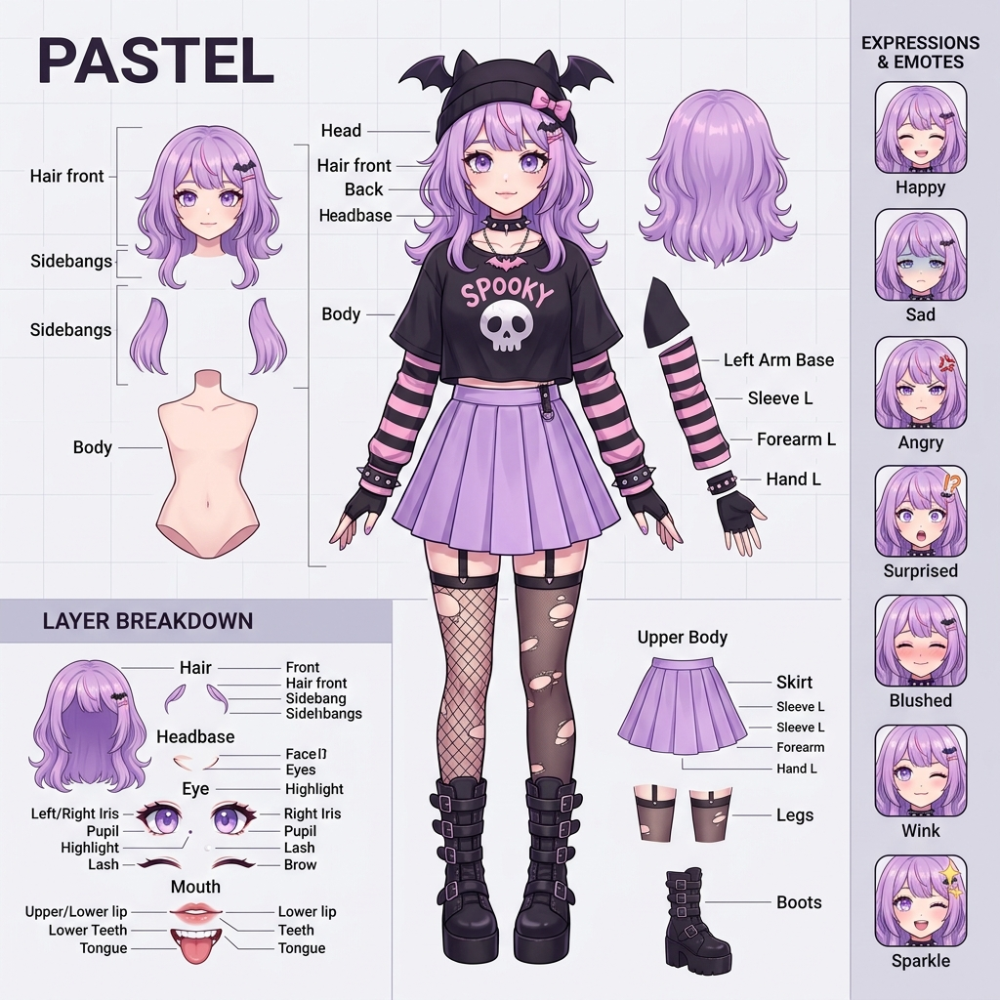

動漫角色設定由
AI 生成圖片之應用深度分析
從靈感產生器到輔助美術管線工具 — 解析 Midjourney、Stable Diffusion 在角色設計、遊戲開發與 VTuber 產業的實戰應用。
核心發現
- 典範轉移：AI 從「隨機抽卡」進入「工程化控制」階段
- Midjourney --cref：鎖定角色五官、髮型與服裝，維持跨場景一致性
- Stable Diffusion：LoRA + ControlNet 實現業界頂級精準控制
- 遊戲開發：結合 LLM 打造具記憶與情緒的 AI NPC
- VTuber 革命：AI 生成分層設定圖 + 24hr 全自動直播系統
01 / 執行摘要
本報告分析了生成式 AI 圖像技術在動漫角色設計與設定領域的具體應用現況。研究發現，AI 已經從單純的「靈感產生器」轉變為具備高度一致性控制與實戰價值的「輔助美術管線工具」。
透過 Midjourney 的角色參考功能（--cref）與 Stable Diffusion 的精準控制（ControlNet），創作者能高效率地產出角色三視圖、分層設定圖等。其核心應用領域已深入到獨立遊戲開發以及虛擬主播（VTuber）自動化直播系統。
02 / 研究範疇與方法
AI 生成動漫角色的標準化工作流程、主流工具的角色一致性技術、遊戲開發與 VTuber 產業的商業與實踐案例。
核心關鍵字探索、設計師社群深度實務萃取、實務測試：透過 AI 模型實際產出角色三視設定圖與 VTuber 素材拆解圖。
03 / 角色設計流程的典範轉移
傳統的動漫角色設計需要歷經「腦暴會議 → 概念草圖 → 決定服裝與色指定 → 繪製三視圖」。這個過程不僅耗時，若中期更改風格，重工成本極高。
現代的 AI 整合流程則轉換為疊代式：
文案轉圖像快速打樣
直接透過 Prompt 將模糊的文字設定視覺化。
三視圖與設定集生成
利用 character sheet, multiple poses 關鍵詞，一次性產生多維度參考基準。
特徵錨定與局部修復
以滿意草圖作為參考圖，透過 Inpainting 修復穿幫結構。
04 / 角色一致性的核心技術
Character Reference 參數
自 v6 與 Niji 6 推出後，只需加入 --cref [URL] --cw 100，AI 即可鎖定角色五官、髮型與服裝特徵，無縫套入各種動作中。
LoRA & ControlNet
透過 15~20 張同角色圖片訓練專屬 LoRA，並輔以 ControlNet OpenPose 提取人體骨架，實現極高端精確控制。目前遊戲從業者最青睞的做法。
05 / 核心應用領域
新世代 AI NPC 與遊戲開發
遊戲美術管線正大量引入 AI。透過 NVIDIA GANverse3D 技術輔助轉建 3D 模組，省去前端美術發想的空白期。
全自動 VTuber 與 Live2D 拆圖
過去成為 VTuber 需花費台幣破萬元請繪師繪製分層圖面。現在可直接用 AI 產出「圖層分離、乾淨白底、表情差分」的立繪，匯入 Live2D Cubism 綁定。

06 / 總結與前瞻洞察
AI 圖像生成在動漫人物設定上，已經跨越了最初的「隨機抽卡」階段，進入到「工程化控制」階段。它大幅降低了創意落地的門檻，賦予小型獨立團隊產出 3A 級角色美術的能力。
然而，當前仍需高度仰賴人類繪師進行打平（Polish）、重繪細微破綻以及綁定骨架。
未來的動漫角色設計將逐漸演變為「人類設計底層邏輯與修飾，AI 負責生成多視角、多表情並即時運算輸出」的混合模式。解決資料來源的版權問題，並結合原生 3D 生成模型（Text-to-3D），將會是下一個爆發點。
07 / 參考文獻
- 1Adobe — AI 生成角色設計流程與架構指南
- 4Promptomania — Midjourney Niji 角色設定圖與 --cref 實戰手冊
- 7NVIDIA ACE — 數位人類技術與遊戲應用白皮書
- 8Inworld AI — 遊戲 NPC 大腦與行為系統構建開發平台
- 10VTuber 開發社群 — AI 生成角色至 Live2D 實作對接指南